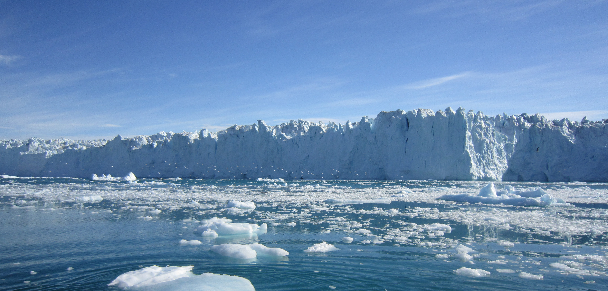
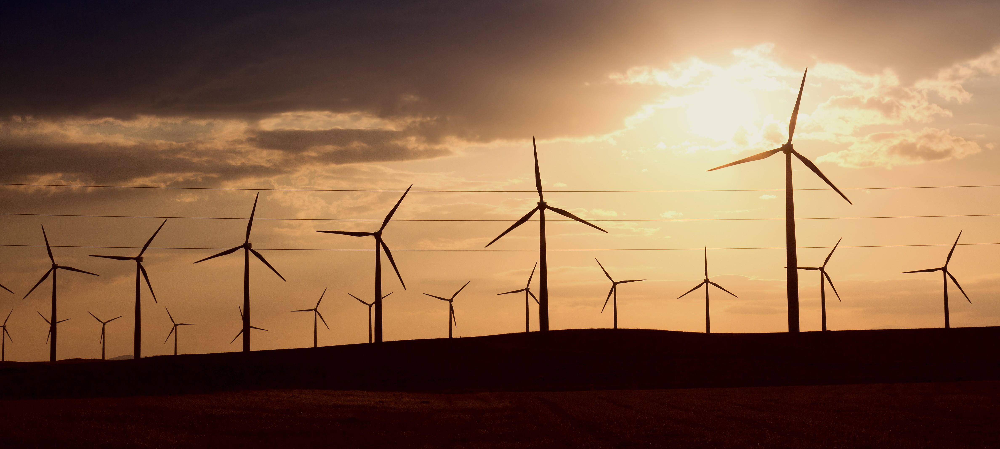

10 SOLUZIONI CONTRO IL CAMBIAMENTO CLIMATICO
I leader politici e l’industria cominciano a prestare attenzione agli avvertimenti sul riscaldamento
globale,
rispondendo con politiche e prodotti tecnologici intesi a fermare l’innalzamento marino e contenere l’aumento della temperatura a meno di 2 gradi centigradi.

1. Apps in mobilità
Apps quali Orocco o PaperKarma posso aiutare a monitorare e ridurre l’impatto dell’uomo sull’ambiente.
La prima monitorizza il footprint di carbonio di un individuo,
mentre la seconda aiuta i proprietari di telefonini a cancellarsi dalle liste di invii di posta elettronica spazzatura semplicemente fotografando la propria mail.
2. Internet of Things
L’Internet of Things collega sempre più le apparecchiature di casa, ufficio e fabbrica,
gli impianti di riscaldamento e di illuminazione al telefono dei rispettivi proprietari, consentendo una considerevole efficienza energetica,
e di conseguenza la riduzione delle emissioni di carbonio. Per le abitazioni, i comandi termostatici connessi sono già una realtà grazie a Nest e Hive,
e possono essere comandati a distanza dall’app del cellulare o del tablet.
Queste tecnologie intelligenti possono anche monitorare le effettive esigenze di riscaldamento o refrigerazione e illuminazione.
3. Energia pulita
Anche se i governi più pionieristici inizialmente hanno incentivato l’adozione di energia pulita come l’energia eolica e solare,
il percorso futuro verso l’energia pulita prevede un’ampia sfida tecnologica e finanziaria.
Nel 2015 la produzione di energia pulita ha fatto fronte al 55 percento del fabbisogno energetico europeo,
suddiviso fra energie rinnovabili (19 percento), idroelettrica (10 percento) e nucleare (26 percento), riferisce Energy Matters.
I giganti dell’industria che possono permetterselo, fra cui Apple e Google, attualmente mirano ad alimentare i propri impianti utilizzando unicamente energie rinnovabili.
Tuttavia, per incrementare sostanzialmente l’impiego di energia pulita è necessario realizzare innovazioni tecnologiche nella produzione di energia pulita,
oltre che per lo sviluppo di modalità più intelligenti e più efficienti per gestire, immagazzinare e trasmettere l’energia una volta prodotta.

4. Big Data
Big data sottendono alle politiche pubbliche, le esplorazioni petrolifere e di gas e alle iniziative mirate ai clienti.
Già oggi le aziende energetiche utilizzano i dati delle previsioni del tempo per prevedere la domanda,
ma un fattore che potrebbe cambiare i termini del gioco è l’iniziativa Data for Climate Action delle Nazioni Unite che hanno invitato studiosi di dati,
ricercatori e innovatori di tutto il mondo a presentare proposte di ricerca a DataForClimateAction.org.
I vincitori, che avranno accesso a un’ampia gamma di dati del settore privato, saranno annunciati nel mese di Novembre 2017.
5. Geo-ingegneria
Geo-engineering o terraforming, cose da fantascienza come Star Trek, Babylon 5 e Stargate, vengono adesso prese sul serio.
Le tecniche di geoingegneria quali le coltivazioni di alghe e l’arboricoltura di massa possono aiutare a catturare e ridurre le emissioni di CO2
e contribuire alla gestione dell’irraggiamento solare rilasciando ceneri vulcaniche che fungono da refrigeranti,
posizionando degli specchi nello spazio per ridirigere i raggi solari o, più prosaicamente, dipingere gli edifici di bianco invece che di nero per riflettere la luce.
6. Agricoltura
L’allevamento del bestiame è una delle principali fondi di emissione di gas effetto serra a livello globale.
Per esempio, una mucca rilascia da 70 a 120 kg di metano all’anno, e per produrre 1 kg di carne di manzo, rilascia la notevole quantità di 34 kg di CO2.
La produzione di carne di agnello è meno inquinante, per 1 kg se ne rilascia la metà, cioè 17 kg.
La carne di maiale totalizza 6 kg e meno di tutti la carne di pollo, con soli 4 kg.
Pertanto, per ridurre in modo significativo le emissioni dei gas serra sarebbe meglio abbandonare la carne di manzo e passare alla produzione alimentare artificiale a quasi zero emissioni.
Una startup chiamata Hampton Creek sta realizzando delle proteine vegetali che hanno l’aspetto e il gusto della carne.
7. Trasporti
Il settore dei trasporti genera almeno il 23 percento delle emissioni di CO2 del settore energetico del globo,
una cifra che potrebbe aumentare man mano che la domanda di trasporti aumenta unitamente all’aumento della popolazione e della ricchezza.
Per combattere l’incremento delle emissioni i governi stanno incoraggiando l’adozione di auto,
autobus e treni elettrici e ibridi. In Gran Bretagna la Royal Mail ha accettato di acquistare da Peugeot 100 furgoni elettrici per la consegna della posta a Londra.
In altre località sono già stati adottati veicoli ibridi alimentati a gas metano liquido, biogas e idrogeno.
Per il futuro, i governi di Regno Unito, Olanda, Francia e Norvegia hanno annunciato di avere in programma di dismettere gradualmente i veicoli tradizionali a benzina e diesel entro il 2025 e il 2040.
8. Migliorare l’efficienza energetica
Migliorare l’efficienza energetica è potenzialmente il primo passo più facile ed efficace per conservare energia, tagliare la spesa per il carburante e ridurre le emissioni di carbonio.
I produttori di autovetture, per esempio, stanno migliorando il risparmio di carburante dei propri veicoli.
9. Mappature
Le mappe interattive, la tracciabilità di tempeste e uragani come Harvey e Irma, che ci danno una misura delle inondazioni e dell’innalzamento del livello del mare,
vengono regolarmente trattate nei notiziari televisivi di tutto il mondo, affascinando gli spettatori e richiamandone l’attenzione.
Molte agenzie governative, fra cui il Met Office britannico, ora dispongono di mappe interattive per evidenziare il rischio di inondazioni e le aree ottimali in cui localizzare le centrali eoliche e solari.
10. Hackathons
A Filadelfia, Toronto e Boston gruppi che condividono gli stessi principi quali giornalisti, scienziati,
tecnologi e chi si occupa di sostenibilità si ritrovano a eventi chiamati Hackathons per trovare soluzioni ai cambiamenti climatici.
L’auspicio è che mettendo insieme conoscenze di tipo diverso per discutere a ruota libera su questo tema si possa pervenire a soluzioni valide per i cambiamenti climatici.